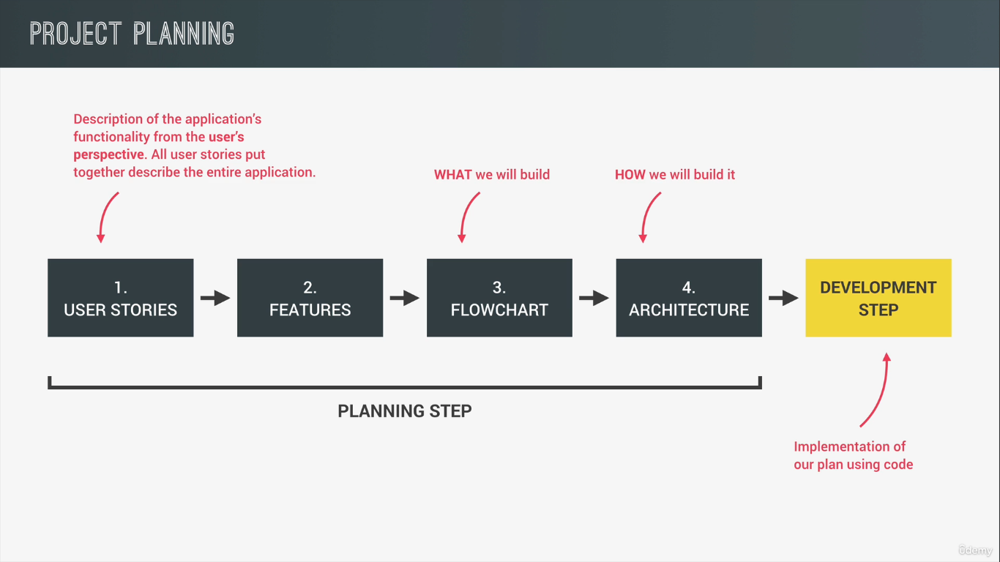

Javascript Notes - Mapty Project
Table of Contents
1. How to Plan a Web Project

2. Using the Geolocation API
if (navigator.geolocation) { navigator.geolocation.getCurrentPosition( function (position) { const { latitude, longitude } = position.coords; console.log(latitude, longitude); console.log(`https://www.google.co.in/maps/@${latitude},${longitude},14z`); }, function () { console.log('Error'); } ); }
3. Displaying a Map using Leaflet Library
if (navigator.geolocation) { navigator.geolocation.getCurrentPosition( function (position) { const { latitude, longitude } = position.coords; console.log(latitude, longitude); console.log( `https://www.google.co.in/maps/@${latitude},${longitude},14z` ); // From the Leaflet docs const map = L.map('map').setView([latitude, longitude], 13); L.tileLayer('https://tile.openstreetmap.org/{z}/{x}/{y}.png', { attribution: '© <a href="https://www.openstreetmap.org/copyright">OpenStreetMap</a> contributors', }).addTo(map); L.marker([latitude, longitude]) .addTo(map) .bindPopup('A pretty CSS popup.<br> Easily customizable.') .openPopup(); }, function () { console.log('Error'); } ); }
4. Displaying Map Marker
const map = L.map('map').setView([latitude, longitude], 13); L.tileLayer('https://tile.openstreetmap.org/{z}/{x}/{y}.png', { attribution: '© <a href="https://www.openstreetmap.org/copyright">OpenStreetMap</a> contributors', }).addTo(map); map.on('click', function (mapEvent) { L.marker(Object.values(mapEvent.latlng)) .addTo(map) .bindPopup( L.popup({ maxWidth: 250, minWidth: 100, autoClose: false, closeOnClick: false, className: 'running-popup', }) ) .setPopupContent('Workout') .openPopup(); }); }, function () { console.log('Error'); } );
5. Rendering Form input
form.addEventListener('submit', function (e) { e.preventDefault(); inputCadence.value = inputDistance.value = inputDuration.value = inputElevation.value = ''; L.marker(Object.values(mapEvent.latlng)) .addTo(map) .bindPopup( L.popup({ maxWidth: 250, minWidth: 100, autoClose: false, closeOnClick: false, className: 'running-popup', }) ) .setPopupContent('Workout') .openPopup(); }); inputType.addEventListener('change', function () { inputElevation.closest('.form__row').classList.toggle('form__row--hidden'); inputCadence.closest('.form__row').classList.toggle('form__row--hidden'); });
6. Project Architecture
7. Refactoring for Project Architecture
class App { #map; #mapEvent; constructor() { this._getPosition(); form.addEventListener('submit', this._newWorkout.bind(this)); inputType.addEventListener('change', this._toggleElevationField); } _getPosition() { if (navigator.geolocation) { navigator.geolocation.getCurrentPosition( this._loadMap.bind(this), function () { console.log('Error'); } ); } } _loadMap(position) { const { latitude, longitude } = position.coords; console.log(latitude, longitude); console.log(`https://www.google.co.in/maps/@${latitude},${longitude},14z`); this.#map = L.map('map').setView([latitude, longitude], 13); L.tileLayer('https://tile.openstreetmap.org/{z}/{x}/{y}.png', { attribution: '© <a href="https://www.openstreetmap.org/copyright">OpenStreetMap</a> contributors', }).addTo(this.#map); this.#map.on('click', this._showForm.bind(this)); } _showForm(mapE) { this.#mapEvent = mapE; form.classList.remove('hidden'); inputDistance.focus(); } _toggleElevationField() { inputElevation.closest('.form__row').classList.toggle('form__row--hidden'); inputCadence.closest('.form__row').classList.toggle('form__row--hidden'); } _newWorkout(e) { e.preventDefault(); inputCadence.value = inputDistance.value = inputDuration.value = inputElevation.value = ''; const { lat, lng } = this.#mapEvent.latlng; L.marker([lat, lng]) .addTo(this.#map) .bindPopup( L.popup({ maxWidth: 250, minWidth: 100, autoClose: false, closeOnClick: false, className: 'running-popup', }) ) .setPopupContent('Workout') .openPopup(); } } const app = new App();
8. Managing workout data: creating classes
class Workout { constructor(coords, distance, duration) { this.coords = coords; this.distance = distance; this.duration = duration; this.date = new Date(); this.id = (new Date().getTime() + '').slice(-10); } } class Running extends Workout { constructor(coords, distance, duration, cadence) { super(coords, distance, duration); this.cadence = cadence; this.calcPace(); } calcPace() { this.pace = this.duration / this.distance; return this.pace; } } class Cycling extends Workout { constructor(coords, distance, duration, elevationGain) { super(coords, distance, duration); this.elevationGain = elevationGain; this.calcSpeed(); } calcSpeed() { this.speed = this.distance / (this.duration / 60); return this.speed; } } const run = new Running([23, -34], 5, 24, 178); const cycle = new Cycling([234, 21], 3, 15, 187);